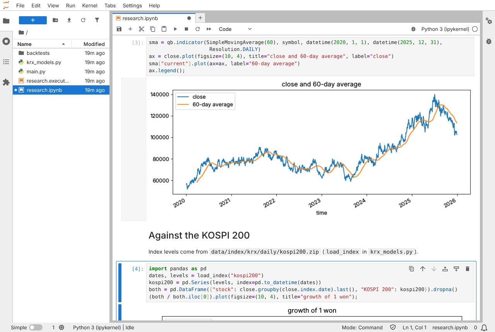
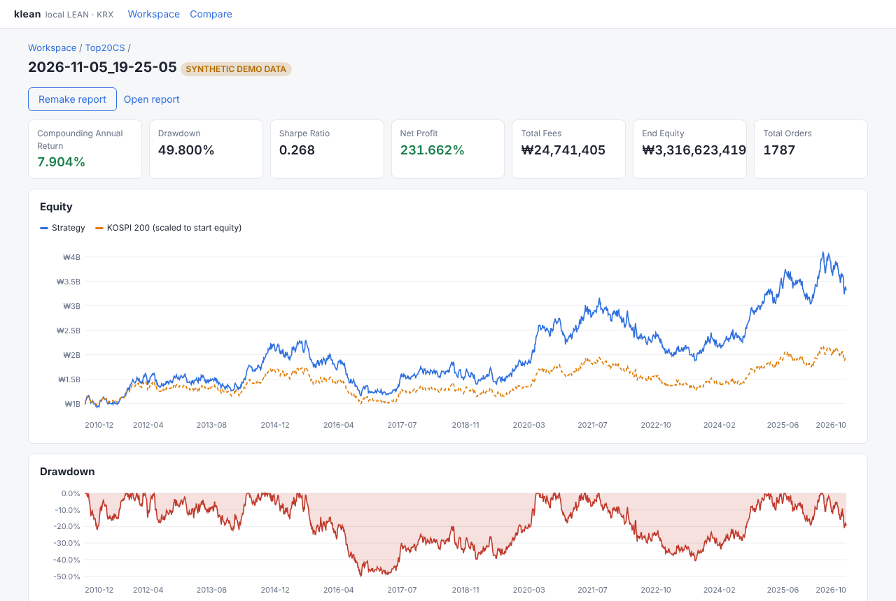
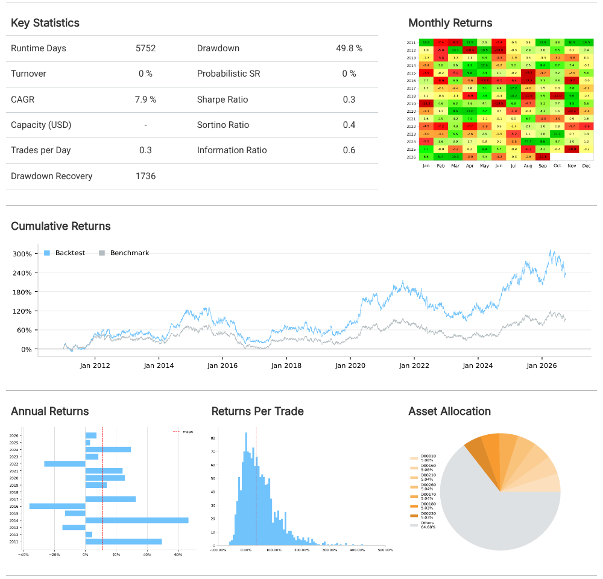

Backtest Korean stocks
on your own computer
krx-lean lets you test investment ideas on KOSPI stocks and ETFs: write a strategy in Python or C#, run it over years of history, and see how it would have done, including Korean fees and taxes.
What you get
A backtest replays the past: your strategy decides what to buy and sell each day, and you see the money it would have made or lost. krx-lean gives you everything needed to do that for the Korean market.
Korean market data
Daily prices of every KOSPI stock and ETF since 2010, including delisted ones, downloaded from the exchange's official API with your own free key.
Korean market rules
Commission, securities transaction tax by date, KRX tick sizes, splits and dividends, and the KOSPI 200 as the benchmark to beat.
A professional engine
Built on LEAN, the open-source engine used by many quant traders, built from source on your machine.
One easy tool
klean sets everything up, runs backtests, compares runs,
searches parameters, makes reports, opens research notebooks, and shows results in your browser.
Get started
About 30–45 minutes, most of it waiting for downloads. You'll copy commands into a terminal; each grey box has a Copy button. You don't need any API key for these steps: you'll try everything on synthetic demo data first.
Open a Linux terminal 5–10 min
krx-lean runs on Linux. Windows 10/11 can run Linux inside it with WSL2. Open PowerShell as Administrator (right-click the Start button → Terminal (Admin)) and run:
wsl --install -d Ubuntu-24.04Restart when asked, then open Ubuntu from the Start menu and choose a user name and
password. That window is your terminal for everything below. Keep your files in Ubuntu's home folder
(~), not under /mnt/c, which is much slower.
Open a terminal. Tested on Ubuntu 24.04 and 22.04; other Linux distributions should work with the same steps (install the equivalent packages in step 2).
macOS on Apple Silicon is experimental: it passes our automated checks, but nobody has followed the steps by hand yet. Use the macOS install steps in place of step 2, then continue with step 3. For a tested setup, use Linux or a Windows PC with WSL2.
Install the tools 10–25 min
System packages, the .NET 10 SDK (LEAN is written in C#), and uv (which provides Python 3.11 for LEAN). Your password is asked for the first command.
sudo apt update
sudo apt install -y git curl unzip python3 python3-venv libicu-dev
curl -sSL https://dot.net/v1/dotnet-install.sh | bash -s -- --channel 10.0
curl -LsSf https://astral.sh/uv/install.sh | sh
echo 'export DOTNET_ROOT="$HOME/.dotnet"' >> ~/.bashrc
echo 'export PATH="$HOME/.dotnet:$HOME/.krx-lean/venv/bin:$PATH"' >> ~/.bashrc
source ~/.bashrcThen krx-lean itself, LEAN, and Python 3.11 for LEAN:
git clone https://github.com/pinjoy99/krx-lean.git ~/krx-lean
python3 -m venv ~/.krx-lean/venv
~/.krx-lean/venv/bin/pip install -e ~/krx-lean
klean install-lean --dir ~/Lean # downloads and builds LEAN (2–10 min)
klean install-python --dir ~/.klean/py311 # Python 3.11 + pandas for LEANCheck: klean --version prints a version number. Warnings during the LEAN build are normal.
Set up a demo workspace 1 min
A workspace is a folder for your strategies and their results. This one gets synthetic demo data: made-up stocks and indices that behave like a stock market, so you can learn everything before your API key arrives.
klean init ~/krx-demo --lean ~/Lean --python-venv ~/.klean/py311
cd ~/krx-demo
klean data install --demo
klean doctor # every line should say OKD00010…)
don't exist, and klean labels every result "SYNTHETIC DEMO DATA". It's for learning the tools, not for
judging strategies.Run your first backtest 2 min
Create a project from the ready-made example (buy the 20 largest stocks, equal weights, rebalance every month) and run it over 2011–2026:
klean project-create Top20 --template top-market-cap
klean backtest Top20After a minute or two you'll see statistics like the yearly return (CAGR), the worst fall (drawdown) and the final value. Then look at it properly:
klean report Top20 # a detailed HTML report
klean gui # opens the results in your browserUnder WSL, install sudo apt install -y wslu so klean gui can open your Windows
browser, or open the address it prints. Stop it with Ctrl+C.
Explore the data in a notebook 5 min the first time
A notebook (Jupyter) lets you look at prices, compute indicators and draw charts step by step, before you write a strategy. The first time, klean installs JupyterLab (a few minutes).
klean research Top20Your browser opens a notebook with LEAN already loaded. Choose Run → Run All Cells: it loads a stock's history, draws its 60-day average and compares it with the KOSPI 200. Change the code and run the cells again. Stop it with Ctrl+C in the terminal.

klean research: the starter notebook on the demo data.Reading the results
What the numbers mean. (The pictures show the demo data, so the figures are made up.)

klean gui: a run's figures, its value over time against the KOSPI 200 (dashed), and its drawdowns.| Figure | Meaning |
|---|---|
| Compounding Annual Return (CAGR) | The average yearly growth. 8% means money doubles in about 9 years. |
| Drawdown | The largest fall from a peak. 50% means at the worst moment you'd have lost half. Ask yourself whether you could sit through it. |
| Sharpe Ratio | Return per unit of risk (ups and downs). Higher is better; above 1 is rare over long periods. |
| Benchmark (KOSPI 200) | What simply holding the market would have done. A strategy worth the effort should beat it after fees. |
| Total Fees | Commission and the securities transaction tax you'd have paid. Frequent trading costs a lot. |
| Slippage | The gap between the price a backtest assumes and what the market really gives you. It is off by default; switch it on with klean backtest Top20 --parameter slippage_ticks 1 to see a more cautious result. |
| Alpha / Beta | Beta: how much the strategy moves with the market (1 = same). Alpha: return not explained by the market. |

klean report: LEAN's report with monthly and yearly returns, the benchmark, and more.Use real data
When you're comfortable, get the real KOSPI data. It's free, but you need your own keys, and approval can take a day, so apply early.
Get the keys
KRX Open API (required, prices): sign up at openapi.krx.co.kr, request a key, and apply for the services 유가증권 일별매매정보, ETF 일별매매정보 and KOSPI 시리즈 일별시세정보. data.go.kr (recommended, dividends): apply for 금융위원회_주식배당정보 at data.go.kr. Step-by-step instructions.
Store them safely
Put them in a file only you can read (never in your code):
mkdir -p ~/.config && touch ~/.config/krx-lean.env && chmod 600 ~/.config/krx-lean.env
nano ~/.config/krx-lean.envKRX_API_KEY=your-krx-key
DATA_GO_KR_KEY=your-data-go-kr-keyDownload and build the data 1.5–2 hours, once
set -a; . ~/.config/krx-lean.env; set +a
krx-lean --root ~/krx-data allThis downloads every trading day since 2010. If it stops, run the same command again: it continues where it left off. Later updates take a minute.
A workspace for real data
klean init ~/krx-workspace --lean ~/Lean --python-venv ~/.klean/py311
cd ~/krx-workspace
klean data install --root ~/krx-data
klean project-create Top20 --template top-market-cap
klean backtest Top20Keep the demo and real workspaces separate (klean won't mix them). To get new days later, run
klean update in the workspace.
Write your own strategy
A strategy is a small Python program. Create an empty project and replace its main.py
with this one, which keeps two stocks at about half each and rebalances every month (try ideas in the
project's notebook first: klean research MyFirst):
klean project-create MyFirst --template empty
nano MyFirst/main.pyfrom AlgorithmImports import *
from krx_models import KrxBoards, krx_benchmark, krx_initialize
class MyFirstStrategy(QCAlgorithm):
"""Hold two stocks, half each, and rebalance at the start of every month."""
def initialize(self):
self.set_start_date(2015, 1, 1)
self.set_end_date(2025, 12, 31)
self.set_cash(100_000_000) # ₩100 million
self.set_time_zone("Asia/Seoul")
self.set_account_currency("KRW")
boards = KrxBoards.load()
self.set_security_initializer(lambda s: krx_initialize(s, boards)) # KRX fees, taxes, tick sizes
self.set_benchmark(krx_benchmark("kospi200")) # compare with the KOSPI 200
codes = ["D00010", "D00050"] # demo stocks; real data: e.g. ["005930", "000660"]
self.stocks = [self.add_equity(c, Resolution.DAILY, Market.KRX).symbol for c in codes]
self.last_month = 0
def on_data(self, data: Slice):
if self.time.month == self.last_month: # once a month
return
if not all(data.contains_key(s) for s in self.stocks):
return
self.last_month = self.time.month
for s in self.stocks:
self.set_holdings(s, 0.49) # about half each, a little cash for feesklean backtest MyFirstKeep the lines between set_time_zone and set_benchmark in every strategy: they apply the
Korean market's rules. With real data, use real codes such as 005930 (Samsung Electronics) and
000660 (SK hynix). To go further, see
Writing strategies and
LEAN's algorithm documentation.
Useful next commands
| Command | What it does |
|---|---|
klean backtest P --parameter holdings 30 | Run with a different setting (the strategy reads it with get_parameter). |
klean backtest P --parameter slippage_ticks 1 | Switch slippage on (it's off by default): every trade gets a slightly worse price, as in a real market. |
klean compare A B | Put two runs side by side. |
klean optimize P --parameter holdings 10 30 10 | Try several settings and rank them (beware of overfitting). |
klean research P | Explore the data in a Jupyter notebook (history, indicators, charts) before writing a strategy. |
klean logs P | Show what the strategy logged, or why a run failed. |
klean doctor | Check the setup when something doesn't work. |
Questions
Does it cost anything?
No. krx-lean, LEAN and the data APIs are free. You don't need a QuantConnect account or subscription.
Can it trade with real money?
Not yet. It only tests strategies on history. Nothing connects to a broker.
Which markets and data are covered?
KOSPI stocks and ETFs, daily prices from 2010. KOSDAQ, KONEX and intraday (minute) data aren't covered yet.
Python or C#?
Either: they give identical results. Python is easier to start with; C# runs several times faster, which helps with long tests and optimizations.
A backtest says "backtest FAILED". What now?
klean prints the error from your strategy right below it, often with the line number. Fix that line and run
again. klean logs PROJECT --console shows LEAN's full output, and the
troubleshooting page
lists common messages.
Where is my data stored?
Only on your computer: downloads in ~/krx-data, strategies and results in your workspaces. Don't share
or publish the downloaded data: it's subject to the sources' terms.
Is it affiliated with QuantConnect or Korea Exchange?
No. krx-lean is an independent open-source project that uses LEAN (Apache-2.0) unmodified.
Learn more
Users guide
Every step in detail: install, data, strategies, tools, daily updates, troubleshooting.
Developers guide
How the data is built and checked, the KRX models, LEAN internals, contributing.
Questions and bugs
Open an issue on GitHub.